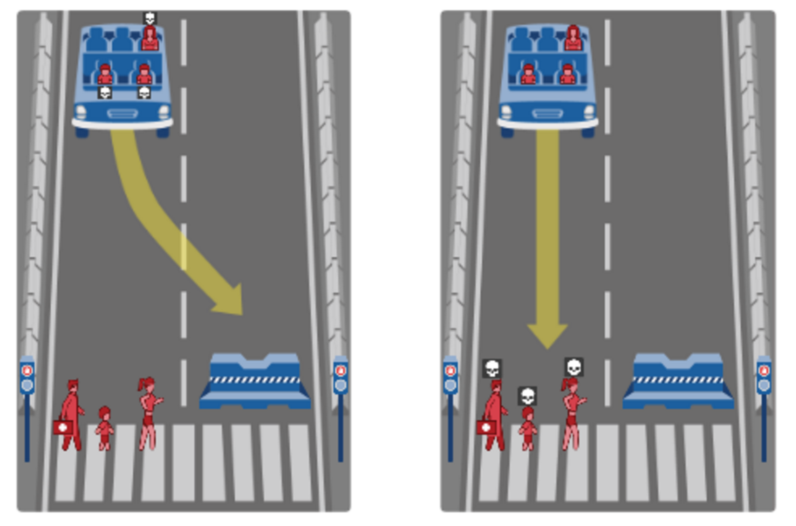

Research suggests that autonomous vehicles will reduce the number of accidents, and therefore fatalities on our roads. A McKinsey&Company report says that crashes could fall by 90%, saving billions of dollars in healthcare alone. But autonomous vehicles will, at some point, be faced with decisions that will result in fatalities – regardless of their actions. Even for humans the ethics of this are muddled. Human drivers can answer ethical questions big and small using intuition, but it’s not that simple for artificial intelligence. AV programmers must either define explicit rules for each of these situations or rely on general driving rules and hope things work out.
Self driving cars and accidents
Probably the most discussed ethical problem with self driving cars is how they should deal with accidents on the road. Take the above image as an example of a situation that can arise, the car is moving too fast to come to a safe stop, so what should it do? Should it crash into the wall killing the passangers of the vehicle, or kill the people crossing the road?
What if the people crossing the road were all elderly, does the life of the two children and mother in the car weigh against the lives of older people? Who's fault led to this situation in the first place? The problem with this situation is that there is no right answer, but the programmers of the self driving cars have to choose one anyway, and this choice could cause issues with some people.
Self driving cars and unemployment
There is a significant number of people in the world who make a living driving(cabs, trucker drivers, delivery men). When self-driving cars become common place is it possible that these people lose their jobs? The current self driving cars still need someone in the vehicle monitoring the car, but in the future this may not be necessary, and this could lead to some of these job markets becoming obsolete.
Expectation that a car is autonomous
Do you still allow manually operated cars when most cars are autonomous. Consider an elevator, people expect sticking their arm in the door will cause it to reopen. Will this become the norm for cars on the street too?
Private vs. public sector/Monopoly
How much influence should a single company like Google have in law making surrounding autonomous vehicles? Too much influence could lead to government created and enforced monopolistic barriers to entry for other companies.